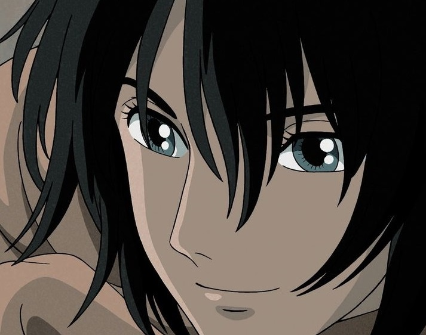

Profile
"Sou um dragão sob o disfarce de um ser humano, ajudo a Chihiro depois que seus pais se transformaram em porcos.Trabalho como subordinado direto de Yubaba, muitas vezes executando recados e fazendo várias missões para ela. Vôo em minha verdadeira forma, pois sou um dragão." Ao longo do filme seu relacionamento com Chihiro se torna mais forte, especialmente depois que ela descobre que ele é um dragão. Este vínculo, eventualmente, leva-los para se apaixonar, pois era o seu amor um para o outro que quebrou feitiço Zeniba sobre Haku. Haku era originalmente o espírito do rio Kohaku e conhece Chihiro, porque uma vez que ele a salvou de um afogamento. Quando o rio foi destruída e preenchido com apartamentos, ele já não tinha uma casa e foi para o mundo espiritual, onde ele se tornou aprendiz de Yubaba. Perto do fim da história Chihiro lembra de sua memória de cair no Kohaku (コハク iluminado "âmbar"). Rio, de que Haku era o espírito, ela, assim, liberta de serviço Yubaba, ajudando-lhe lembrar o seu verdadeiro nome e passado, que ele tinha esquecido devido à alteração do nome e da maldição que Yubaba colocou sobre ele. Haku era uma vez um espírito do rio que tinha entrado no mundo dos espíritos que pretendem aprender a magia de Yubaba, e como resultado, tornou-se um trabalhador que seguiu todos os comandos.Ao longo do filme seu relacionamento com Chihiro se torna mais forte, especialmente depois que ela descobre que ele é um dragão. Este vínculo, eventualmente, leva-los para se apaixonar, pois era o seu amor um para o outro que quebrou feitiço Zeniba sobre Haku. Haku era originalmente o espírito do rio Kohaku e conhece Chihiro, porque uma vez que ele a salvou de um afogamento. Quando o rio foi destruída e preenchido com apartamentos, ele já não tinha uma casa e foi para o mundo espiritual, onde ele se tornou aprendiz de Yubaba. Perto do fim da história Chihiro lembra de sua memória de cair no Kohaku (コハク iluminado "âmbar"). Rio, de que Haku era o espírito, ela, assim, liberta de serviço Yubaba, ajudando-lhe lembrar o seu verdadeiro nome e passado, que ele tinha esquecido devido à alteração do nome e da maldição que Yubaba colocou sobre ele. Haku era uma vez um espírito do rio que tinha entrado no mundo dos espíritos que pretendem aprender a magia de Yubaba, e como resultado, tornou-se um trabalhador que seguiu todos os comandos.Ao longo do filme seu relacionamento com Chihiro se torna mais forte, especialmente depois que ela descobre que ele é um dragão. Este vínculo, eventualmente, leva-los para se apaixonar, pois era o seu amor um para o outro que quebrou feitiço Zeniba sobre Haku. Haku era originalmente o espírito do rio Kohaku e conhece Chihiro, porque uma vez que ele a salvou de um afogamento. Quando o rio foi destruída e preenchido com apartamentos, ele já não tinha uma casa e foi para o mundo espiritual, onde ele se tornou aprendiz de Yubaba. Perto do fim da história Chihiro lembra de sua memória de cair no Kohaku (コハク iluminado "âmbar"). Rio, de que Haku era o espírito, ela, assim, liberta de serviço Yubaba, ajudando-lhe lembrar o seu verdadeiro nome e passado, que ele tinha esquecido devido à alteração do nome e da maldição que Yubaba colocou sobre ele. Haku era uma vez um espírito do rio que tinha entrado no mundo dos espíritos que pretendem aprender a magia de Yubaba, e como resultado, tornou-se um trabalhador que seguiu todos os comandos.